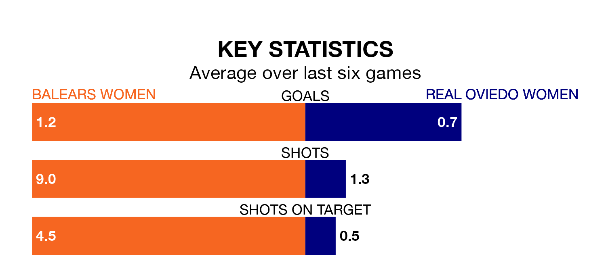

Balears Women host Real Oviedo Women in Sunday's early match looking to bounce back from defeat last time out in the Segunda Federación Femenina.
Balears, who sit third in the league after 28 games, fell to a 1-0 away defeat to Real Madrid II Women on April 21.
They face an Oviedo Women side who picked up a win in their last match, a 1-0 victory against Athletic Club III Women, and who sit seventh in the table.
With 50 goals in 28 games so far this season, Balears are the league's second-highest scorers with 1.8 goals per game. And they are conceding fewer than average, letting in 24 goals at a rate of 0.9 per game.
Oviedo Women, meanwhile, are average scorers, with 1.3 goals per game. They have conceded 0.9 goals per game.
The hosts are in good form in the Segunda Federación Femenina, with four wins and a draw from their last six games.
With two wins and two draws over that period, the away team's form is worse – they have taken eight points from 18, compared to Balears's 13.
Updated: 07:59 (UTC), 26/04/24